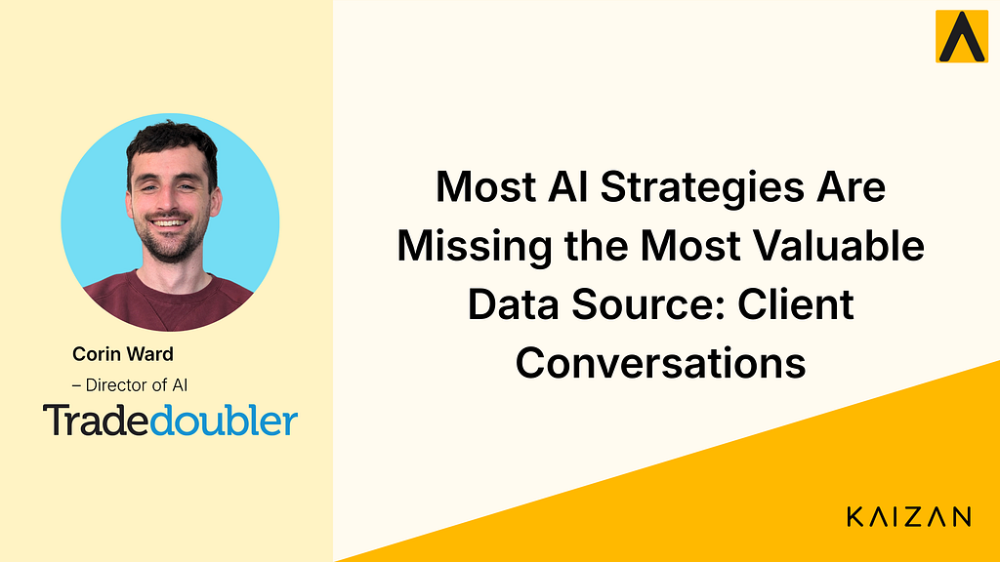

How Tradedoubler is Quantifying Client Conversations to Power AI and Product decisions

Corin Ward, Director of AI, shares how AI is helping standardise global operations, quantify client feedback, and turn conversations into structured data for product and business decisions.
Tradedoubler operates across multiple markets, with local teams delivering tailored services to clients in each region.
This decentralised model is a key strength. It enables strong local relationships. But it also creates a challenge for AI leaders:
How do you standardise data and decision-making across a global organisation without losing local nuance?
In this case study, Corin Ward explains how implementing Kaizan AI has enabled Tradedoubler to unify client conversation data, quantify insights at scale, and build a foundation for AI-driven decision-making.
Key Results
Using Kaizan, Tradedoubler is now able to:
**Standardise data across global teams while maintaining local nuance
** Create a consistent, comparable view of client interactions across markets.
**Quantify qualitative client feedback at scale
** Turn conversations into measurable themes, trends, and signals.
**Turn conversations into product and business decisions
** Use real client insight to inform roadmap, prioritisation, and strategy.
The Challenge: Global Scale Without Standardised Insight
Tradedoubler operates across multiple countries, each with its own processes and client relationships.
While this enables high-quality local service, it introduces complexity when trying to scale insight across the organisation.
“Each country is its own entity… the more local processes you have, you move away from globalisation efficiencies.”
From an AI leadership perspective, this creates a core challenge:
how to maintain local flexibility while achieving global standardisation.
At the same time, client insight was largely anecdotal.
“You hear a lot of word-of-mouth about issues and positive things, but quantifying that is very difficult.”
Without structured data, it was difficult to determine:
how widespread an issue actually was
which themes mattered most
where to prioritise action
The Shift: From Conversations to Structured Data
Kaizan enables Tradedoubler to transform unstructured client conversations into structured, analysable data.
Instead of relying on subjective feedback loops, teams can now quantify what is being said across thousands of interactions.
“You can see how many times an issue is mentioned and how much positive feedback is coming in.”
This allows AI and product leaders to:
identify patterns across markets
validate insights with real data
prioritise based on scale, not opinion
What was previously anecdotal becomes measurable and actionable.
From Admin Burden to Strategic Data Layer
Before implementing Kaizan, transcripts and recordings already existed, but were time-consuming to use.
“Transcripts and video recordings are nothing new… but they were very admin-heavy.”
Kaizan removes that burden by automatically generating summaries, follow-ups, and structured outputs.
More importantly, it changes how this data is used.
“We can move beyond just recording to actually building business decisions and business cases off the data.”
What was once documentation becomes a strategic data layer for the business.
Turning Conversations into Product Development Signals
One of the most powerful outcomes has been the ability to use conversation data to directly inform product development.
With access to a growing dataset of client interactions, Tradedoubler can now:
identify recurring feature requests across markets
build data-backed product business cases
“We can query how many times something has been mentioned… which helps build a business case for a product.”
This removes guesswork and enables faster, more confident decision-making.
Scaling Insight Across Time and Teams
As adoption has grown, so has the dataset.
Tradedoubler now has access to years of meeting data, enabling deeper analysis over time.
“We have this huge dataset now… we can start making not just client decisions, but product decisions.”
Insights can be structured at multiple levels:
client level
country level
team or user level
This flexibility allows the organisation to scale insight generation across the entire business.
Building for an Agentic Future
What began as a client-facing tool has evolved into a broader data foundation for AI.
The structured dataset created by Kaizan can now be used to power internal AI initiatives.
“We can feed this data into agents and proofs of concept… to empower them and get better results.”
This opens up new possibilities for:
AI agents trained on real client interactions
automated decision support systems
more advanced internal AI workflows
For AI leaders, this represents a shift from isolated tools to connected, data-driven systems.
The Impact
Since implementing Kaizan, Tradedoubler has transformed how it captures, structures, and uses client data.
Instead of relying on fragmented, anecdotal insight, the organisation now has access to a scalable dataset built from real conversations.
This enables them to:
standardise insight across global teams
quantify client feedback at scale
make more informed product and business decisions
reduce manual administrative work
build a foundation for AI and agent-based systems
For AI leaders, the ability to turn unstructured communication into structured intelligence is becoming a key competitive advantage.
“The scope for the future is very exciting… we can now use this data to power the next generation of AI and automation.”
How Tradedoubler is Quantifying Client Conversations to Power AI and Product decisions was originally published in Kaizan on Medium, where people are continuing the conversation by highlighting and responding to this story.